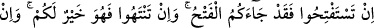
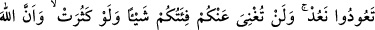
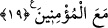

amellerden sakınmaktır. Yoksa yaptıkları ameller kıymetsiz hâle gelip kazandıkları
sevaplar heba olur. Meselâ bir salkım üzüm veya bir demet fesleğen pazarda bir dirhem
etmez. Fakat bunu biri satın alıp padişaha hediye ettiğinde eğer padişahın hoşuna
giderse karşılık olarak ona bin dinar verir. Böylece bir dirhemlik şey, bin dînar
kıymetinde olmuş olur. Eğer hoşuna gitmezse onu geri çevirir. O da eski düşük fiyatında
kalmış olur. İşte bizim durumumuz da bunun gibidir.
Vehb demiştir ki: “Geçmiş ümmetler içinde bir adam vardı. Yetmiş sene Allah’a
kulluk etti. Günlerini oruçlu geçirir cumartesiden cumartesiye iftar ederdi. Allah’tan bir
dilekte bulundu, fakat yerine getirilmedi. Bunun üzerine nefsine dönerek: “Eğer sende
bir hayır olsaydı şüphesiz dileğin yerine getirilirdi.” dedi. Allah Teâlâ da ona bir melek
gönderip: “Ey Âdemoğlu, bir an nefsini ayıplaman, yaptığın bütün ibadetlerden daha
hayırlıdır.” buyurdu.”
Hâfız Şirâzî ne güzel söylemiştir:
Bizim gittiğimiz yolda sadece kırık bir gönül satın alırlar,
Kendini beğenmişlerin pazarı bir başka yerdedir
Allah’ım, bizi tevfik ehlinden ve tahkik yoluna sülûk edenlerden eyle!
19. (Ey kâfirler!) Zafer istiyorsanız, işte size zafer geldi! (Yenelim derken
yenildiniz). Ve eğer (inkardan) vazgeçerseniz bu sizin için daha iyidir. Eğer tekrar
savaşa dönerseniz, biz de (ona) yardıma döneriz. Topluluğunuz çok bile olsa, sizden
hiçbir şeyi savamaz. Çünkü Allah müminlerle beraberdir.
“Zafer istiyorsanız, işte size zafer geldi!” Hitap, alay yoluyla Mekke ehlinedir.
Çünkü onlar Bedir’e sefere çıkmak istediklerinde Kâbe’nin örtüsüne sarılıp: “Allah’ım,
iki ordudan daha üstün olanına, iki topluluktan daha doğru yolda bulunanına, iki gruptan
daha iyisine ve din bakımından daha fazîletli olanına yardım et!” diye dua etmişlerdi.
Rivayete göre Ebû Cehil, Bedir günü şöyle demişti: “Allah’ım, iki fırkadan daha
faziletli ve zafere daha lâyık olanını muzaffer kıl. Hangimiz sıla-i rahmi kesiyor ve
topluluğu bozup dağıtıyorsa onu da helak et.”
Ebû Cehil, son derece ahmak olduğu için kendi aleyhine dua etmiş, Allah Teâlâ da
onun duasını kabul etmiştir. Nitekim aynı gün Afrâ Hatunun iki oğlu Avf ile Muavviz ona